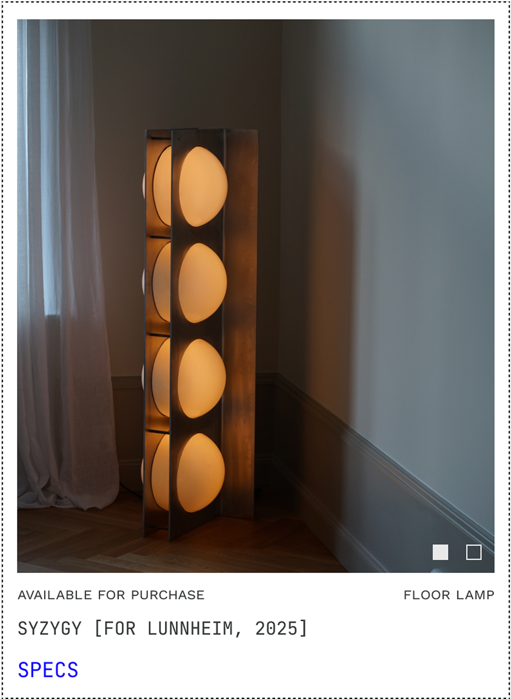
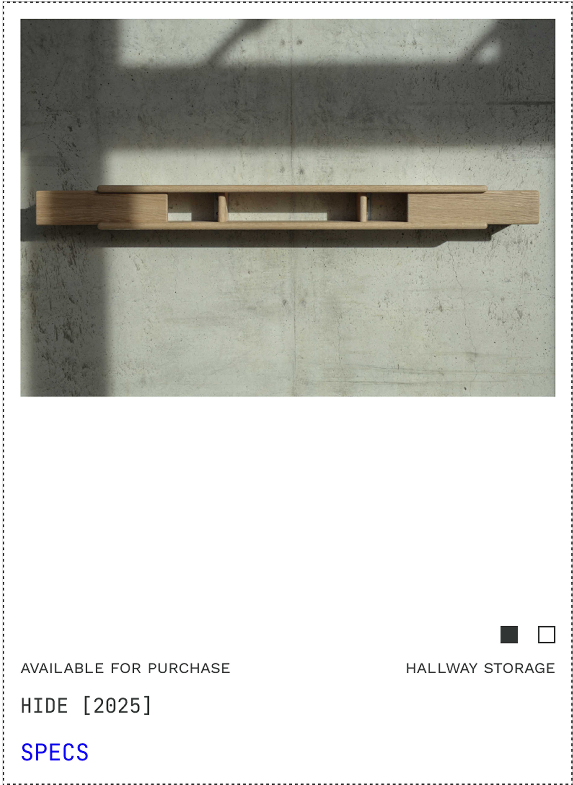
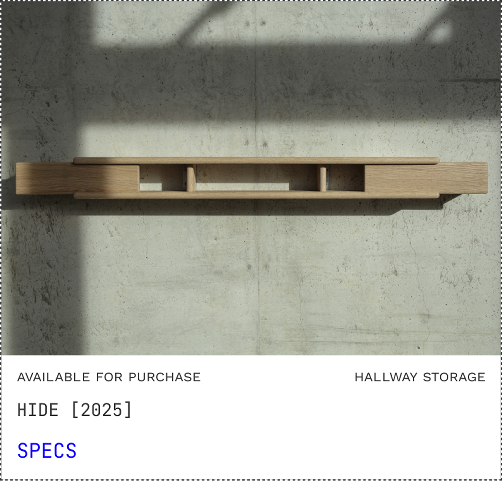
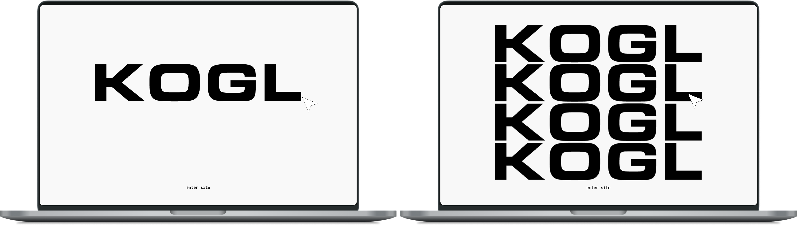
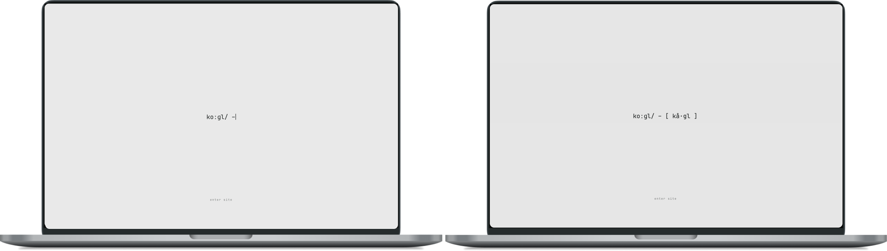

KOGL Web Design
A premium e-commerce and product listing site for a contemporary Scandinavian furniture design studio, designed to showcase handcrafted pieces and attract collaborations with manufacturers and industry partners. The site uses minimalist product listing with streamlined navigation and a curated project index, with a splash page type animation to establish a memorable first impression. Delivered ahead of schedule for Milan Design Week 2026.

Final KOGL site

Card showing full extent of image height

Card design option informed by image height study

Card design option 2 (selected)

Splash animation option: logomark hover

Splash animation option: type phonetics (selected)